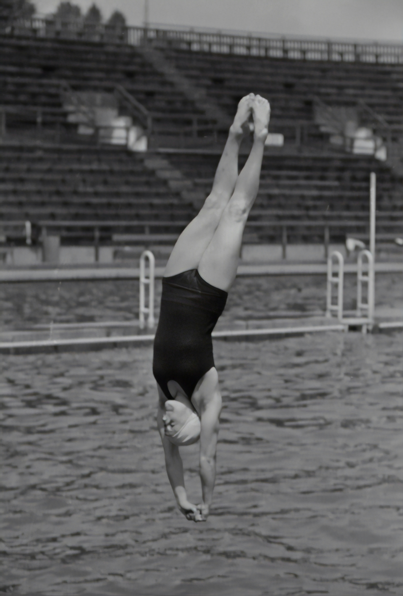

Diving was first introduced in the official programme of the Summer Olympic Games at the 1904 Games of St. Louis and has been an Olympic sport since. It was known as "fancy diving"[1] for the acrobatic stunts performed by divers during the dive (such as somersaults and twists). This discipline of Aquatics, along with swimming, synchronised swimming and water polo, is regulated and supervised by the International Swimming Federation (FINA), the international federation (IF) for aquatic sports.
